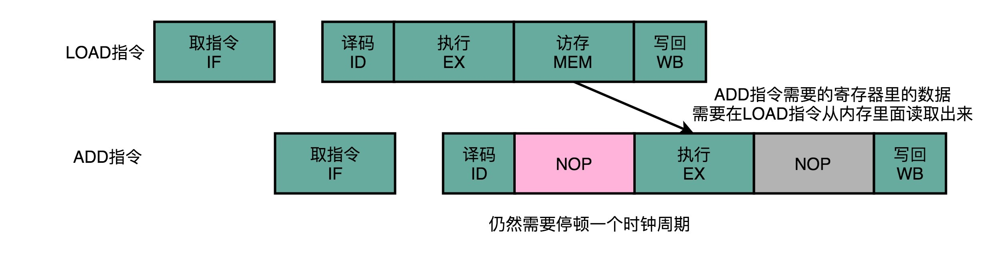
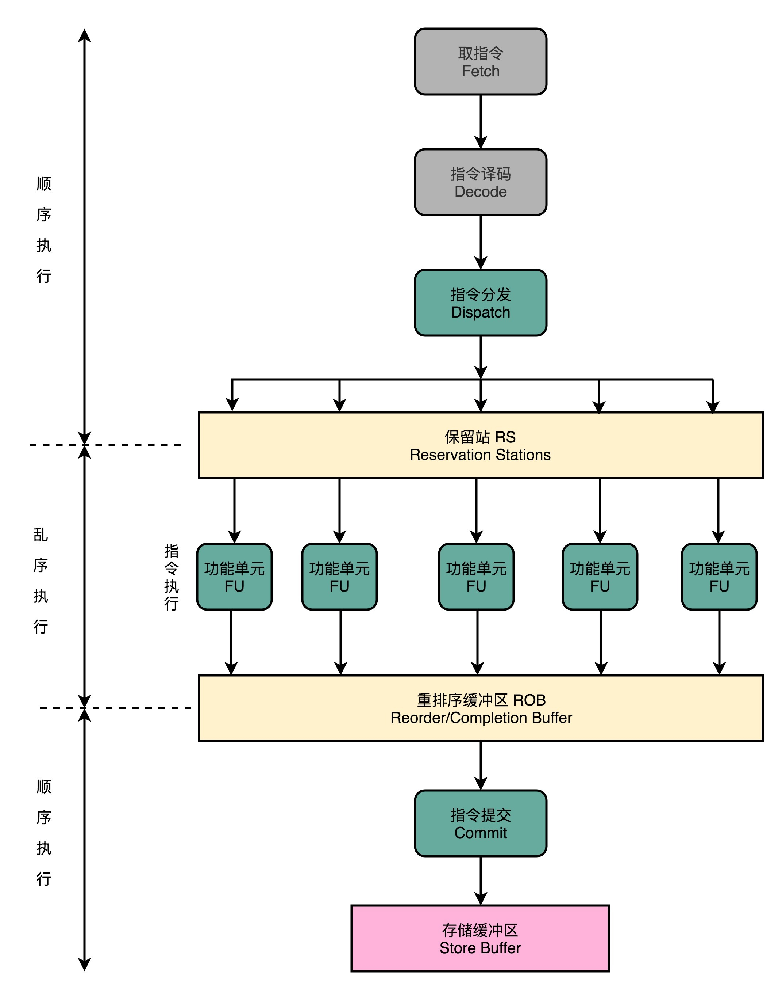

- 00 开篇词 为什么你需要学习计算机组成原理？.md.html
- 01 冯·诺依曼体系结构：计算机组成的金字塔.md.html
- 02 给你一张知识地图，计算机组成原理应该这么学.md.html
- 03 通过你的CPU主频，我们来谈谈“性能”究竟是什么？.md.html
- 04 穿越功耗墙，我们该从哪些方面提升“性能”？.md.html
- 05 计算机指令：让我们试试用纸带编程.md.html
- 06 指令跳转：原来if...else就是goto.md.html
- 07 函数调用：为什么会发生stack overflow？.md.html
- 08 ELF和静态链接：为什么程序无法同时在Linux和Windows下运行？.md.html
- 09 程序装载：“640K内存”真的不够用么？.md.html
- 10 动态链接：程序内部的“共享单车”.md.html
- 11 二进制编码：“手持两把锟斤拷，口中疾呼烫烫烫”？.md.html
- 12 理解电路：从电报机到门电路，我们如何做到“千里传信”？.md.html
- 13 加法器：如何像搭乐高一样搭电路（上）？.md.html
- 14 乘法器：如何像搭乐高一样搭电路（下）？.md.html
- 15 浮点数和定点数（上）：怎么用有限的Bit表示尽可能多的信息？.md.html
- 16 浮点数和定点数（下）：深入理解浮点数到底有什么用？.md.html
- 17 建立数据通路（上）：指令加运算=CPU.md.html
- 18 建立数据通路（中）：指令加运算=CPU.md.html
- 19 建立数据通路（下）：指令加运算=CPU.md.html
- 20 面向流水线的指令设计（上）：一心多用的现代CPU.md.html
- 21 面向流水线的指令设计（下）：奔腾4是怎么失败的？.md.html
- 22 冒险和预测（一）：hazard是“危”也是“机”.md.html
- 23 冒险和预测（二）：流水线里的接力赛.md.html
- 24 冒险和预测（三）：CPU里的“线程池”.md.html
- 25 冒险和预测（四）：今天下雨了，明天还会下雨么？.md.html
- 26 Superscalar和VLIW：如何让CPU的吞吐率超过1？.md.html
- 27 SIMD：如何加速矩阵乘法？.md.html
- 28 异常和中断：程序出错了怎么办？.md.html
- 29 CISC和RISC：为什么手机芯片都是ARM？.md.html
- 30 GPU（上）：为什么玩游戏需要使用GPU？.md.html
- 31 GPU（下）：为什么深度学习需要使用GPU？.md.html
- 32 FPGA、ASIC和TPU（上）：计算机体系结构的黄金时代.md.html
- 33 解读TPU：设计和拆解一块ASIC芯片.md.html
- 34 理解虚拟机：你在云上拿到的计算机是什么样的？.md.html
- 35 存储器层次结构全景：数据存储的大金字塔长什么样？.md.html
- 36 局部性原理：数据库性能跟不上，加个缓存就好了？.md.html
- 37 理解CPU Cache（上）：“4毫秒”究竟值多少钱？.md.html
- 38 高速缓存（下）：你确定你的数据更新了么？.md.html
- 39 MESI协议：如何让多核CPU的高速缓存保持一致？.md.html
- 40 理解内存（上）：虚拟内存和内存保护是什么？.md.html
- 41 理解内存（下）：解析TLB和内存保护.md.html
- 42 总线：计算机内部的高速公路.md.html
- 43 输入输出设备：我们并不是只能用灯泡显示“0”和“1”.md.html
- 44 理解IO_WAIT：IO性能到底是怎么回事儿？.md.html
- 45 机械硬盘：Google早期用过的“黑科技”.md.html
- 46 SSD硬盘（上）：如何完成性能优化的KPI？.md.html
- 47 SSD硬盘（下）：如何完成性能优化的KPI？.md.html
- 48 DMA：为什么Kafka这么快？.md.html
- 49 数据完整性（上）：硬件坏了怎么办？.md.html
- 50 数据完整性（下）：如何还原犯罪现场？.md.html
- 51 分布式计算：如果所有人的大脑都联网会怎样？.md.html
- 52 设计大型DMP系统（上）：MongoDB并不是什么灵丹妙药.md.html
- 53 设计大型DMP系统（下）：SSD拯救了所有的DBA.md.html
- 54 理解Disruptor（上）：带你体会CPU高速缓存的风驰电掣.md.html
- 55 理解Disruptor（下）：不需要换挡和踩刹车的CPU，有多快？.md.html
- 结束语 知也无涯，愿你也享受发现的乐趣.md.html
- 捐赠
24 冒险和预测（三）：CPU里的“线程池”
过去两讲，我为你讲解了通过增加资源、停顿等待以及主动转发数据的方式，来解决结构冒险和数据冒险问题。对于结构冒险，由于限制来自于同一时钟周期不同的指令，要访问相同的硬件资源，解决方案是增加资源。对于数据冒险，由于限制来自于数据之间的各种依赖，我们可以提前把数据转发到下一个指令。
但是即便综合运用这三种技术，我们仍然会遇到不得不停下整个流水线，等待前面的指令完成的情况，也就是采用流水线停顿的解决方案。比如说，上一讲里最后给你的例子，即使我们进行了操作数前推，因为第二条加法指令依赖于第一条指令从内存中获取的数据，我们还是要插入一次 NOP 的操作。

那这个时候你就会想了，那我们能不能让后面没有数据依赖的指令，在前面指令停顿的时候先执行呢？
答案当然是可以的。毕竟，流水线停顿的时候，对应的电路闲着也是闲着。那我们完全可以先完成后面指令的执行阶段。
填上空闲的 NOP：上菜的顺序不必是点菜的顺序
之前我为你讲解的，无论是流水线停顿，还是操作数前推，归根到底，只要前面指令的特定阶段还没有执行完成，后面的指令就会被“阻塞”住。
但是这个“阻塞”很多时候是没有必要的。因为尽管你的代码生成的指令是顺序的，但是如果后面的指令不需要依赖前面指令的执行结果，完全可以不必等待前面的指令运算完成。
比如说，下面这三行代码。
a = b + c
d = a * e
x = y * z
计算里面的 x ，却要等待 a 和 d 都计算完成，实在没啥必要。所以我们完全可以在 d 的计算等待 a 的计算的过程中，先把 x 的结果给算出来。
在流水线里，后面的指令不依赖前面的指令，那就不用等待前面的指令执行，它完全可以先执行。
可以看到，因为第三条指令并不依赖于前两条指令的计算结果，所以在第二条指令等待第一条指令的访存和写回阶段的时候，第三条指令就已经执行完成了。
这就好比你开了一家餐馆，顾客会排队来点菜。餐馆的厨房里会有洗菜、切菜、炒菜、上菜这样的各个步骤。后厨也是按照点菜的顺序开始做菜的。但是不同的菜需要花费的时间和工序可能都有差别。有些菜做起来特别麻烦，特别慢。比如做一道佛跳墙有好几道工序。我们没有必要非要等先点的佛跳墙上菜了，再开始做后面的炒鸡蛋。只要有厨子空出来了，就可以先动手做前面的简单菜，先给客户端上去。
这样的解决方案，在计算机组成里面，被称为乱序执行（Out-of-Order Execution，OoOE）。乱序执行，最早来自于著名的 IBM 360。相信你一定听说过《人月神话》这本软件工程届的经典著作，它讲的就是 IBM 360 开发过程中的“人生体会”。而 IBM 360 困难的开发过程，也少不了第一次引入乱序执行这个新的 CPU 技术。
CPU 里的“线程池”：理解乱序执行
那么，我们的 CPU 怎样才能实现乱序执行呢？是不是像玩俄罗斯方块一样，把后面的指令，找一个前面的坑填进去就行了？事情并没有这么简单。其实，从今天软件开发的维度来思考，乱序执行好像是在指令的执行阶段，引入了一个“线程池”。我们下面就来看一看，在 CPU 里，乱序执行的过程究竟是怎样的。
使用乱序执行技术后，CPU 里的流水线就和我之前给你看的 5 级流水线不太一样了。我们一起来看一看下面这张图。

\1. 在取指令和指令译码的时候，乱序执行的 CPU 和其他使用流水线架构的 CPU 是一样的。它会一级一级顺序地进行取指令和指令译码的工作。
\2. 在指令译码完成之后，就不一样了。CPU 不会直接进行指令执行，而是进行一次指令分发，把指令发到一个叫作保留站（Reservation Stations）的地方。顾名思义，这个保留站，就像一个火车站一样。发送到车站的指令，就像是一列列的火车。
\3. 这些指令不会立刻执行，而要等待它们所依赖的数据，传递给它们之后才会执行。这就好像一列列的火车都要等到乘客来齐了才能出发。
\4. 一旦指令依赖的数据来齐了，指令就可以交到后面的功能单元（Function Unit，FU），其实就是 ALU，去执行了。我们有很多功能单元可以并行运行，但是不同的功能单元能够支持执行的指令并不相同。就和我们的铁轨一样，有些从上海北上，可以到北京和哈尔滨；有些是南下的，可以到广州和深圳。
\5. 指令执行的阶段完成之后，我们并不能立刻把结果写回到寄存器里面去，而是把结果再存放到一个叫作重排序缓冲区（Re-Order Buffer，ROB）的地方。
\6. 在重排序缓冲区里，我们的 CPU 会按照取指令的顺序，对指令的计算结果重新排序。只有排在前面的指令都已经完成了，才会提交指令，完成整个指令的运算结果。
\7. 实际的指令的计算结果数据，并不是直接写到内存或者高速缓存里，而是先写入存储缓冲区（Store Buffer 面，最终才会写入到高速缓存和内存里。
可以看到，在乱序执行的情况下，只有 CPU 内部指令的执行层面，可能是“乱序”的。只要我们能在指令的译码阶段正确地分析出指令之间的数据依赖关系，这个“乱序”就只会在互相没有影响的指令之间发生。
即便指令的执行过程中是乱序的，我们在最终指令的计算结果写入到寄存器和内存之前，依然会进行一次排序，以确保所有指令在外部看来仍然是有序完成的。
有了乱序执行，我们重新去执行上面的 3 行代码。
a = b + c
d = a * e
x = y * z
里面的 d 依赖于 a 的计算结果，不会在 a 的计算完成之前执行。但是我们的 CPU 并不会闲着，因为 x = y * z 的指令同样会被分发到保留站里。因为 x 所依赖的 y 和 z 的数据是准备好的， 这里的乘法运算不会等待计算 d，而会先去计算 x 的值。
如果我们只有一个 FU 能够计算乘法，那么这个 FU 并不会因为 d 要等待 a 的计算结果，而被闲置，而是会先被拿去计算 x。
在 x 计算完成之后，d 也等来了 a 的计算结果。这个时候，我们的 FU 就会去计算出 d 的结果。然后在重排序缓冲区里，把对应的计算结果的提交顺序，仍然设置成 a -> d -> x，而计算完成的顺序是 x -> a -> d。
在这整个过程中，整个计算乘法的 FU 都没有闲置，这也意味着我们的 CPU 的吞吐率最大化了。
整个乱序执行技术，就好像在指令的执行阶段提供一个“线程池”。指令不再是顺序执行的，而是根据池里所拥有的资源，以及各个任务是否可以进行执行，进行动态调度。在执行完成之后，又重新把结果在一个队列里面，按照指令的分发顺序重新排序。即使内部是“乱序”的，但是在外部看起来，仍然是井井有条地顺序执行。
乱序执行，极大地提高了 CPU 的运行效率。核心原因是，现代 CPU 的运行速度比访问主内存的速度要快很多。如果完全采用顺序执行的方式，很多时间都会浪费在前面指令等待获取内存数据的时间里。CPU 不得不加入 NOP 操作进行空转。而现代 CPU 的流水线级数也已经相对比较深了，到达了 14 级。这也意味着，同一个时钟周期内并行执行的指令数是很多的。
而乱序执行，以及我们后面要讲的高速缓存，弥补了 CPU 和内存之间的性能差异。同样，也充分利用了较深的流水行带来的并发性，使得我们可以充分利用 CPU 的性能。
总结延伸
好了，总结一下。这一讲里，我为你介绍了乱序执行，这个解决流水线阻塞的技术方案。因为数据的依赖关系和指令先后执行的顺序问题，很多时候，流水线不得不“阻塞”在特定的指令上。即使后续别的指令，并不依赖正在执行的指令和阻塞的指令，也不能继续执行。
而乱序执行，则是在指令执行的阶段通过一个类似线程池的保留站，让系统自己去动态调度先执行哪些指令。这个动态调度巧妙地解决了流水线阻塞的问题。指令执行的先后顺序，不再和它们在程序中的顺序有关。我们只要保证不破坏数据依赖就好了。CPU 只要等到在指令结果的最终提交的阶段，再通过重排序的方式，确保指令“实际上”是顺序执行的。
© 2019 - 2023 Liangliang Lee. Powered by gin and hexo-theme-book.